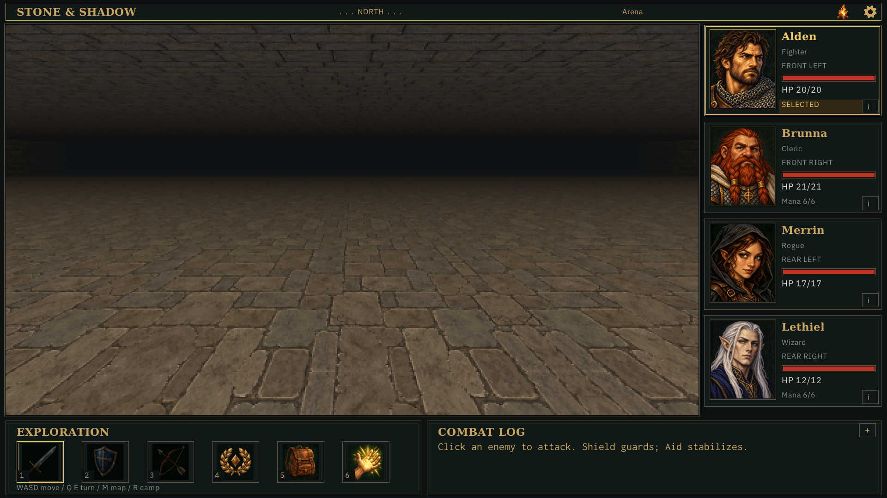
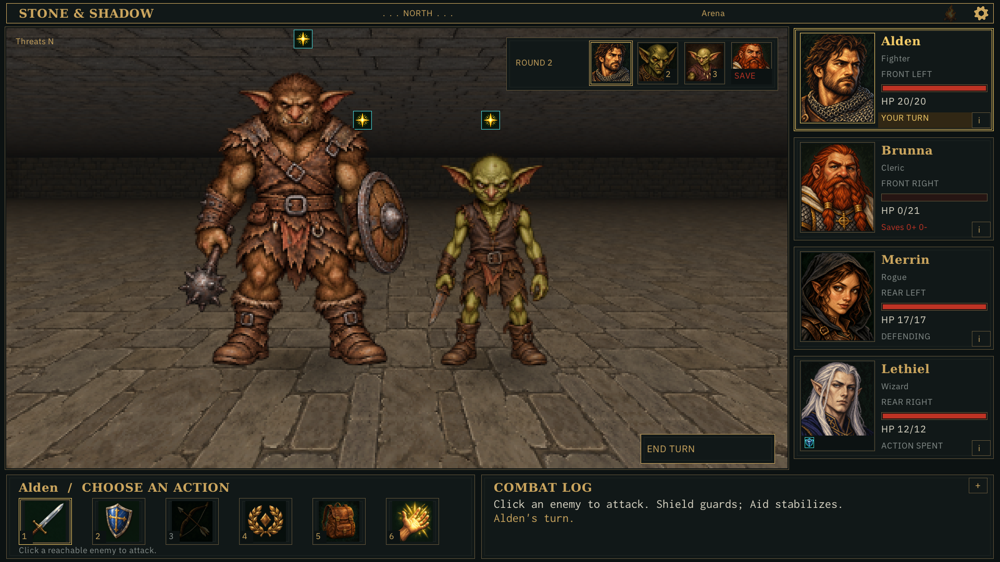
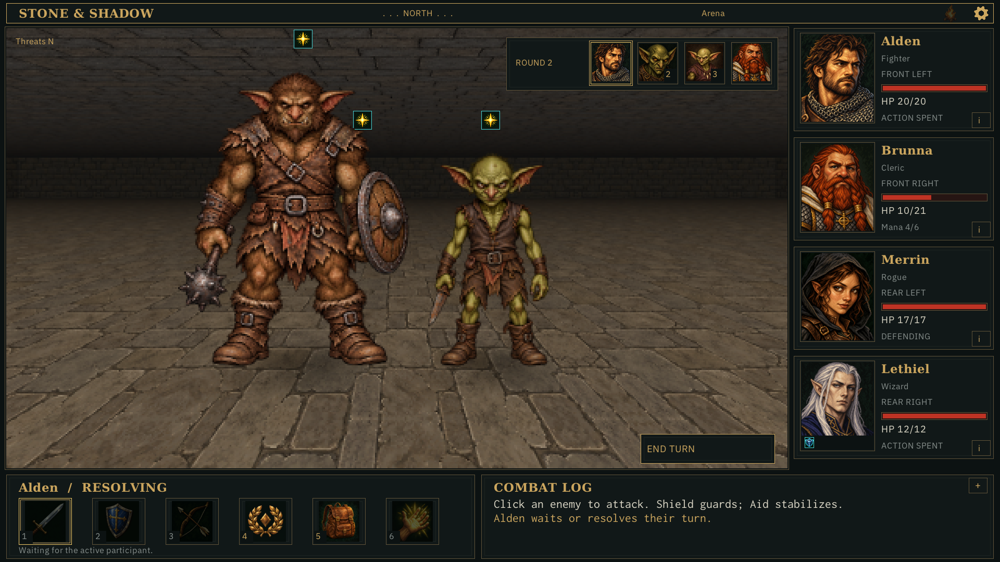
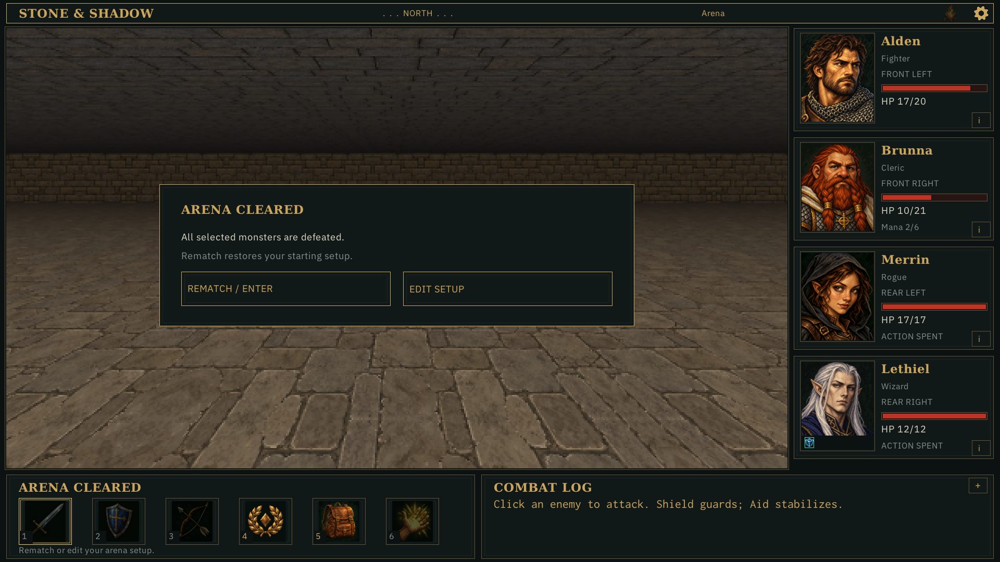
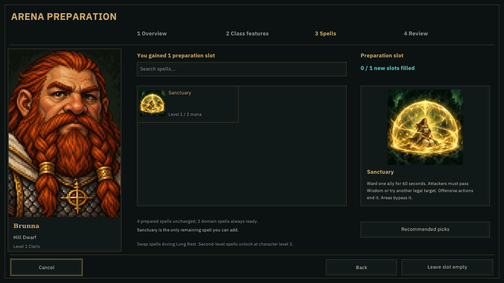
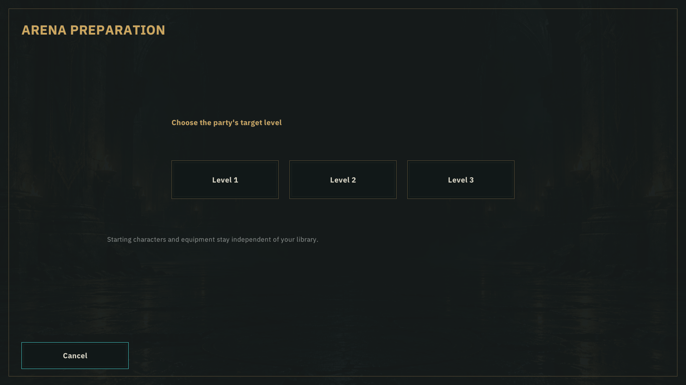
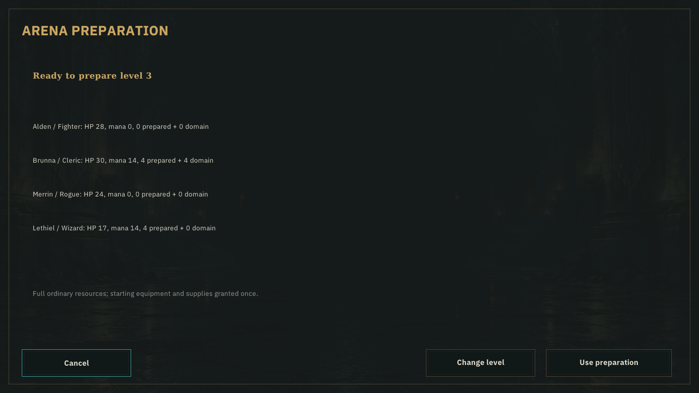
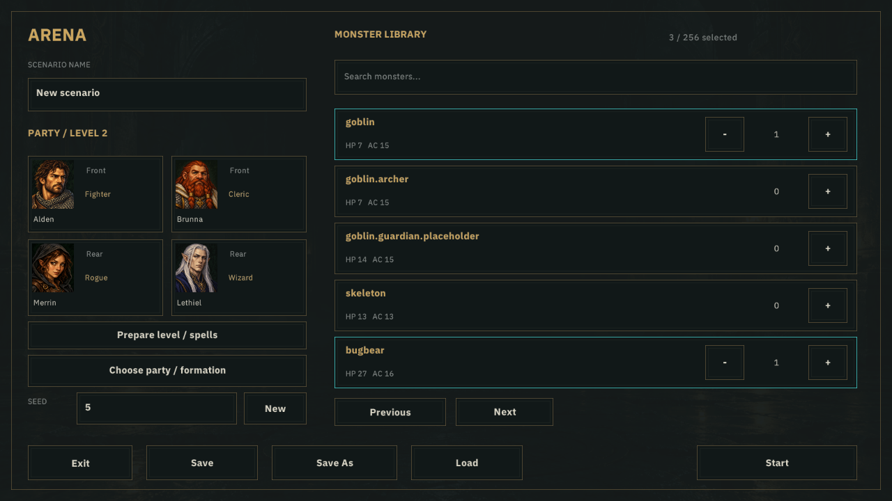
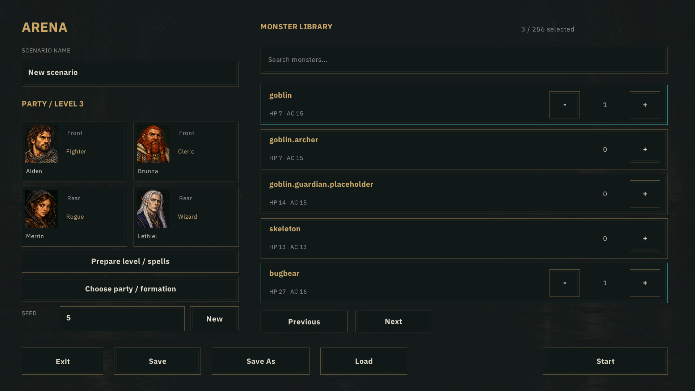
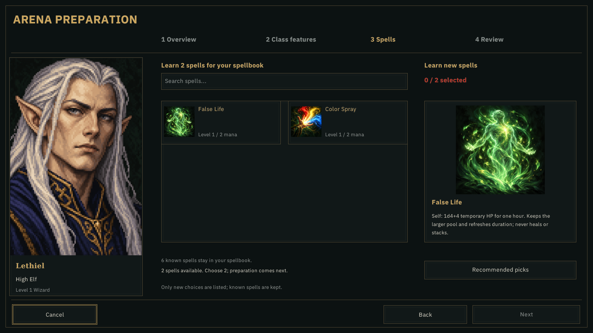

Hidden application-owned captures. Battle views strictly replay balanced L2 bugbear support, seed 8. Operation 196: cleric downed; 199: ordinary potion rescue. HUD reconstruction does not replay historical logs or hover.









